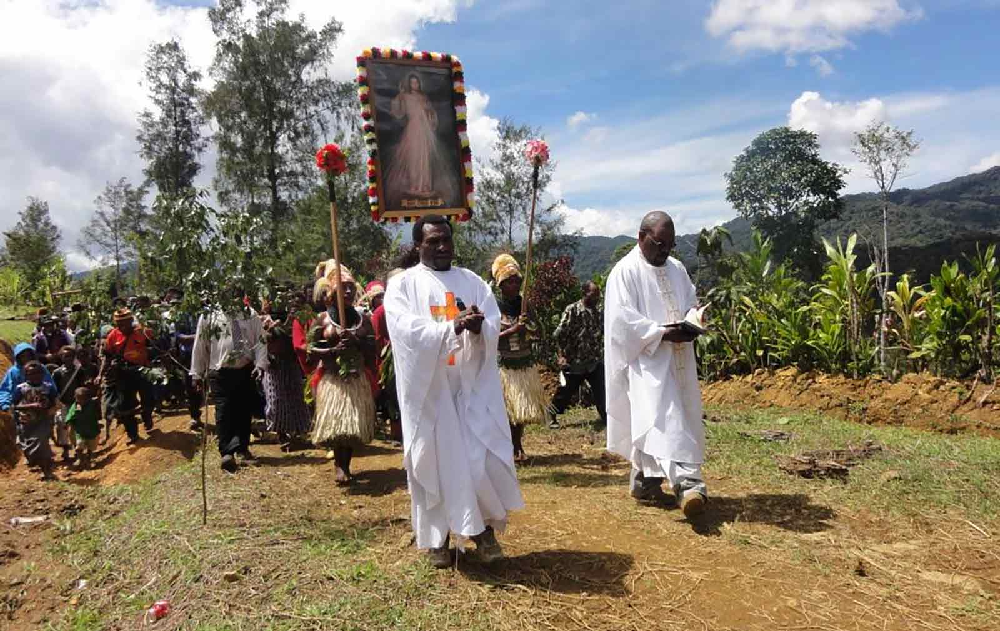

Traditional Music of Papua New Guiné
Unknow
Papua Nova Guiné (oficialmente estado independente da Papua Nova Guiné) é um país da Oceania que ocupa mais da metade da ilha Nova Guiné. A área total da Papua-Nova Guiné é de aproximadamente 462.840 km². Sua capital é a cidade de Porto Moresby
Moeda: A moeda oficial de Papua Nova Guiné é o Kina (PGK). Seu nome é originado de uma concha típica utilizada como moeda em transações antes da colonização. Um Kina vale 1,23 reais
Valor do PIB: O valor do PIB de Papua Nova Guiné em dólares é de $32,5 bilhões.
Dança: O país é famoso por suas danças tradicionais, conhecidas como "sing-sing"
que reúnem diversos grupos étnicos em festividades.
Os participantes usam roupas coloridas, penas, pinturas corporais e máscaras
durante essas apresentações. As danças estão intimamente ligadas à
espiritualidade, à natureza e à vida comunitária, ocorrendo em cerimônias
de colheita, rituais religiosos, casamentos e festivais culturais.
Abaixo temos um vídeo mostrando como é a dança sing-sing
Música:A música tradicional é caracterizada pelo uso de instrumentos como tambores
de madeira (kundu), flautas de bambu e chocalhos confeccionados
com sementes. O ritmo está intimamente associado às danças sing-sing,
caracterizadas por batidas repetitivas e cantos coletivos que fortalecem
a identidade tribal.
Abaixo temos um exemplo de uma música tradicional do país.
Unknow
Religiosidade: A influência de missionários europeus durante o período colonial resultou em uma população majoritariamente cristã. Igreja Católica, Luterana, Anglicana e Evangélicas No entanto, muitas comunidades ainda mantêm suas crenças animistas tradicionais, que incluem espíritos da natureza, rituais de cura e práticas relacionadas aos ancestrais.
Comida: A gastronomia do país é descomplicada e fundamentada em ingredientes locais,
como batata-doce, inhame, taro, mandioca, banana e coco. As carnes mais
consumidas são frango, porco e peixe.
O Mumu, feito em um forno subterrâneo, é o prato mais típico: carnes, legumes
e verduras são cozidos lentamente em pedras quentes, envoltos em folhas de
bananeira. Esse prato é comum em comemorações e festividades.
Também é muito comum o consumo de frutas tropicais (como: Acacaxi, manga,
mamão, coco)
Abaixo temos uma foto do prato Mumu
Mumu
Infraestrutura: diversas regiões rurais ainda necessitam de vias, fornecimento de energia e conectividade à internet.
Saúde: problemas de acesso a hospitais e profissionais da medicina, sobretudo em áreas distantes.
Educação: elevados níveis de abandono escolar e escassez de recursos para docentes e instituições de ensino.
Segurança: ocorrência de violência tribal em certas áreas e dificuldades no enfrentamento da criminalidade urbana.
Economia: embora seja abundante em recursos naturais como petróleo, gás e ouro, ainda enfrenta uma grande dependência das exportações e desigualdade social.